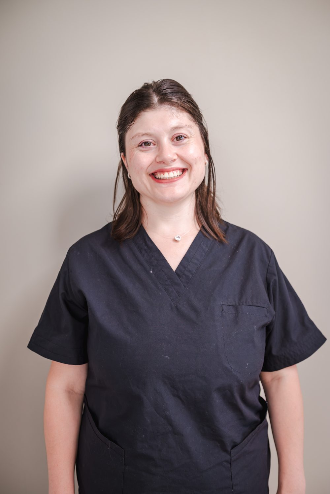

Cuando llega el diagnóstico,
el mapa se borra.
Oncobrújula es orientación profesional para pacientes y familias que atraviesan un tratamiento oncológico. Te ayudo a entender lo que dijo el equipo, a ordenar las dudas y a saber qué hacer en casa.

Lic. Natalia MansillaEnfermería oncológica desde 2017 · Videollamada a todo el paísTrabajo junto a tu equipo tratante, no lo reemplazo.
Saliste de la consulta y el mapa sigue en blanco.
Te dieron mucha información en poco tiempo.
Algunas palabras no las entendiste. Otras ya no te acordás.
No sabés a quién preguntarle, y te da cosa molestar.
Y el sistema, encima, es un laberinto.
No tenés que armar ese mapa a solas.
Qué ganás con una orientación
Una videollamada de 50 a 60 minutos, pensada para que salgas con más claridad de la que entraste.
Precio de lanzamiento
$50.000 $35.000
Válido para las primeras 5 orientaciones o hasta el 30 de noviembre.
Incluye: videollamada de 50 a 60 minutos + resumen escrito + ficha si hace falta.
Reservar mi lugarEntendés lo que te dijeron.
Traducimos a lenguaje claro informes, indicaciones y próximos pasos.
Llegás a la próxima consulta con tus preguntas.
Salís con una lista para llevarle a tu oncólogo/a.
Sabés qué hacer en casa.
Cuidados, signos de alarma y cuándo ir a la guardia. Y te queda todo por escrito.
Este espacio no es una consulta médica ni una segunda opinión oncológica.
¿En qué momento del camino estás?
Elegí la opción que más se parece a tu situación y la brújula te orienta.
Tocá una opción y te cuento por dónde empezar.
Recibiste un diagnóstico y saliste de la consulta con la cabeza llena.
Es normal sentir que todo pasa muy rápido. El primer paso es ordenar: qué te dijeron, qué estudios faltan, cuál es el plan y quién es tu contacto en el centro.
Tenés un turno cerca y no sabés qué preguntar.
Llegar con tus preguntas anotadas cambia la consulta. Empezá por la ficha de preguntas para el oncólogo, y si querés, las armamos juntas según tu caso.
Estás en tratamiento y entre visitas quedan dudas sobre síntomas, medicación oral o cuidados en casa.
Algunas dudas pueden esperar al próximo turno y otras no. Repasá las señales de alerta de abajo y, para todo lo demás, lo ordenamos juntas.
Sos familiar o cuidador/a y necesitás entender el plan sin reemplazar al equipo.
Acompañar también cansa. Podés pedir la orientación con el consentimiento de quien está en tratamiento, para entender el plan y saber cómo ayudar.
Señales de alerta
Recordá que hay situaciones que requieren consulta urgente:
- Fiebre de 37,8 °C o más que se mantiene durante una hora.
- Moretones o sangrados sin haberte golpeado.
- Vómitos o diarrea intensos que no se cortan.
- Falta de aire.
En esos casos andá a la guardia o llamá al servicio de emergencias.
Empezar es simple
- 1
Me escribís.
Por WhatsApp o Instagram, en pocas líneas: en qué momento del camino estás.
- 2
Coordinamos.
Te confirmo día y horario. El valor de lanzamiento es $35.000. Reservar no te compromete a nada más.
- 3
Nos vemos por videollamada.
50 a 60 minutos. Después te mando el resumen escrito y, si hace falta, una ficha.
Quién soy
Lic. Natalia Mansilla
Enfermería oncológica
Recibida en febrero de 2015, aunque empecé a trabajar en diciembre de 2013. Entre 2017 y 2018 estuve en Córdoba: trasplante de médula ósea, internado en oncohematología y hospital de día. Después, terapia intensiva hasta febrero de 2020, cuando volví a Río Cuarto. Desde octubre de 2020 estoy en CIMA, en oncología ambulatoria y hospital de día. Doy clases desde 2021; en 2026, en la Universidad Nacional de Río Cuarto.
Oncobrújula es para que no tengas que armar ese mapa a solas. Te escucho, ordenamos lo que quedó colgado y armamos las preguntas para tu equipo. Con calma.
Formación
- Formada en Enfermería oncológica de adultos — Instituto Nacional del Cáncer (INC)
- Formada en Cuidados paliativos para enfermería — Instituto Nacional del Cáncer (INC)
- Formada en Enfermería para oncología pediátrica — Instituto Nacional del Cáncer (INC)
- Formada en Educación al paciente y su familia — Hospital Privado Universitario de Córdoba
- Formada en Susceptibilidad y fragilidad de la piel oncológica — Asociación Argentina de Dermatología, Área Cosmetología
- Formada en Estética oncológica — Omnia Professional Learning
Preguntas frecuentes
No. La asesoría es informativa y de acompañamiento. El objetivo es que llegues más preparada a la consulta con tu equipo.
No. Podemos ordenar opciones y preguntas para que vos decidas con tu médico/a, respetando tus valores.
Sí. Justamente ahí suele haber más niebla: estudios, tiempos, segunda opinión, qué llevar al primer turno.
No. Si hay fiebre de 37,8 °C o más que se mantiene durante una hora, moretones o sangrados sin golpe, vómitos o diarrea intensos que no se cortan, o falta de aire, andá a la guardia o llamá al servicio de emergencias.
No. Son referentes para orientar. Cada uno atiende por su cuenta; yo no tomo esos turnos ni cobro por esa derivación.
La persona en tratamiento o un familiar, con el consentimiento de quien está transitando el proceso. Muchas veces quien escribe es un familiar. Si acompañás a alguien, este espacio también es para vos.
En Recursos: profesionales de confianza en Río Cuarto y guías para descargar.
Lo que dicen quienes me conocen
De las mejores personas que conocí en este proceso. Gracias por tu apoyo humano y profesional.
La mejor enfermera lejos: empática, paciente, alegre, excelente profesional.
Si algún día tengo que volver a esos sillones, que sea de tu mano.
La persona con más empatía que conocí, se nota que ama lo que hace.
Agendá una orientación personalizada
Una videollamada para entender lo que dijo el equipo, ordenar las dudas y saber qué hacer en casa.